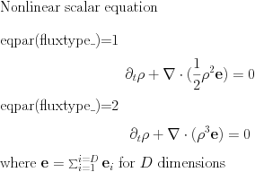
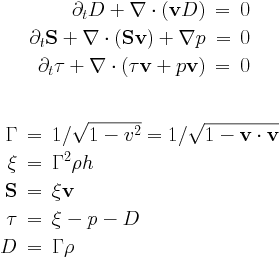
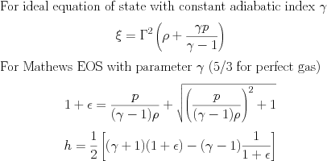
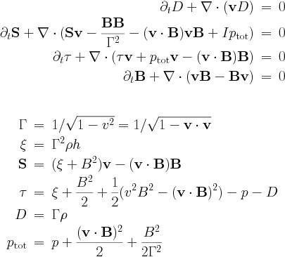
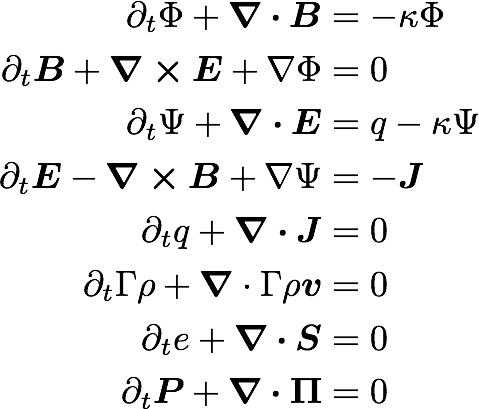
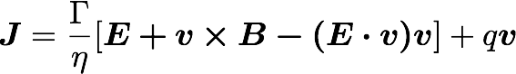
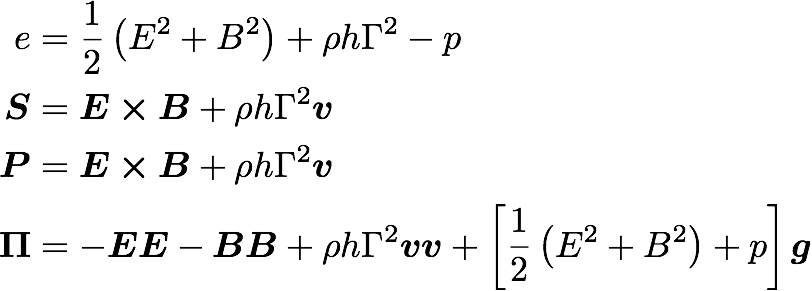

The code is configured to use the specified equation with the setting
$AMRVAC_DIR/setup.pl -p=EQUATIONwhere EQUATION is one of the implemented physics modules (hd,mhd,srmhd,...), see below.
$AMRVAC_DIR/setup.pl -p=rho

The transport equation describes the transport of a scalar field, here the density rho by a prescribed velocity field. This equation is used for test purposes.
The eqpar(v1_), eqpar(v2_), ... equation parameters (there are as many as there are dimensions NDIM) define the components of the uniform velocity field.
For a linear scalar equation the Riemann solver is trivial, thus all TVD type methods give identical results.
$AMRVAC_DIR/setup.pl -p=nonlinear

The nonlinear scalar equation is either the inviscid Burgers equation, or the non-convex equation, depending on the eqpar(fluxtype_) equation parameter (1 for Burgers, 2 for nonconvex).
There is also a version coupling the nonlinear set with the advection equation: nonlinear+rho. This was used to study basic coupling strategies.
$AMRVAC_DIR/setup.pl -p=hd -eos=isoIncludes the equations for pressureless dust and the Shallow Water equations

The system of adiabatic hydrodynamical equations are solved for the density rho and the momentum density m=rho*v. The pressure is a function of density only since an isentropic initial condition is assumed. There are two equation parameters, the adiabatic index eqpar(gamma_) (the isothermal case corresponds to eqpar(gamma_)=1) and the adiabatic constant eqpar(adiab_) (which should be positive or zero). It is possible to set eqpar(adiab_)=0 and handle the case of pressureless dust.
The system of shallow water equations is a special case with the following identifications: rho=h represents the height of the water column, eqpar(gamma_)=2 and the adiabatic coefficient is half of the gravitational acceleration eqpar(adiab_)=g/2.
There is a Roe-type Riemann solver implemented, in hd/roe.t. Several routines specific to HLLC are in hd/hdhllc.t.
$AMRVAC_DIR/setup.pl -p=hd -eos=gamma

The Euler equations are solved for density rho, the momentum density m=rho*v and the total energy density e. The pressure is a derived quantity which is calculated from the conservative variables.
There is a single equation parameter, the adiabatic index eqpar(gamma_) (typical value is 5/3). The Riemann solver uses the Roe-average, and is implemented in hd/roe.t. Several routines specific to HLLC are in hd/hdhllc.t.
This equation module can be combined with the LIBRARY source definitions for (local) optically thin radiative losses, see AMRVAC_Man/mpiamrvac_radcool.html. Schematically, it introduces terms as

In this case two scaling parameters relate to temperature and the radiative loss function, namely eqpar(Tscale_) and eqpar(Lscale_).
The HD module can also be combined with the external gravity modules, either for uniform gravity (amrvacusr.gravity.t) or for point gravity, see AMRVAC_Man/mpiamrvac_pointgrav.html. These are

and for point gravity

Note how the gravitational constant and the non-dimensionalization is taken into the parameters M_point and its location x_point.
$AMRVAC_DIR/setup.pl -mhd -eos=iso

This is the system of the MHD equations without the full energy equation, and with the following conservative variables: density rho, momentum density m=rho*v, and the magnetic field B. The magnetic field is measured in units for which the magnetic permeability is 1. The density pressure relation is polytropic.
The source terms on the right hand side with eta in them are the resistive terms.
There are three equation parameters: the polytropic index eqpar(gamma_) (which must be larger or equal to 1), and the resistivity eqpar(eta_), and the entropy eqpar(adiab_). Ideal MHD corresponds to eqpar(eta_)=0, positive values give a uniform resistivity, while a negative value calls the specialeta procedure in the AMRVACUSR module to determine the resistivity as a function of the coordinates, of the conservative variables, and/or of the current density. This subroutine is to be completed by the user.
$AMRVAC_DIR/setup.pl -p=mhd -eos=gamma

This is the full system of the MHD equations, with the following conservative variables: density rho, momentum density m=rho*v, total energy density e and the magnetic field B. The magnetic field is measured in units for which the magnetic permeability is 1.
The source terms on the right hand side with eta in them are the resistive terms.
There are two equation parameters: the adiabatic index eqpar(gamma_) (which must be strictly positive and different from 1), and the resistivity eqpar(eta_). Ideal MHD corresponds to eqpar(eta_)=0, positive values give a uniform resistivity, while a negative value calls the specialeta procedure in the AMRVACUSR module to determine the resistivity as a function of the coordinates, of the conservative variables, and/or of the current density. This subroutine is to be completed by the user.
There is a Roe-type Riemann solver implemented using arithmetic averaging, in mhd/roe.t, while several routines specific to HLLC are in mhd/mhdhllc.t.
This equation module can be combined with the LIBRARY source definitions for (local) optically thin radiative losses, see AMRVAC_Man/mpiamrvac_radcool.html. It can also be combined with the external gravity modules, either for uniform gravity (amrvacusr.gravity.t) or for point gravity, see AMRVAC_Man/mpiamrvac_pointgrav.html.
We also have implemented the splitting strategy, where a static, potential background field is assumed. This modifies the equations and brings in extra sources and flux terms.
$AMRVAC_DIR/setup.pl -p=srhd
or
$AMRVAC_DIR/setup.pl -p=srhdeos

This equation module has to deal with the non-trivial relation between primitive variables and conservative variables. Therefore, two auxiliary variables are taken along, which are the Lorentz factor and the pressure. The transformation from primitive to conservative also depends on the actual equation of state assumed. The srhd module assumes an ideal gas with constant adiabatic index, the srhdeos builds in the Mathews EOS. These are

It is straightforward to generalize the EOS used, by suitably modifying only subroutines in the srhdeos/srhdeos.t module.
$AMRVAC_DIR/setup.pl -p=srmhd -eos=gamma/synge/iso

This equation module has to deal with the non-trivial relation between primitive variables and conservative variables. Therefore, two auxiliary variables are taken along, which are the Lorentz factor and the ksi variable. The transformation from primitive to conservative also depends on the actual equation of state assumed. Several equations of state are implemented: Ideal gas ($AMRVAC_DIR/setup.pl -eos=gamma), approximate Synge gas ($AMRVAC_DIR/setup.pl -eos=synge) and isentropic flow ($AMRVAC_DIR/setup.pl -eos=iso).
It is straightforward to generalize the EOS used, by suitably modifying only the srmhd/eos.t module.
$AMRVAC_DIR/setup.pl -p=srrmhd -eos=gamma/syngeThe implemented algorithm is adopted from Komissarov (2007) and evolves both magnetic and electric fields. A GLM treatment to constrain the divergences of B and E is used.

Two constraint equations are evolved, for variables psib_ and phi_. As in the SRMHD case, two axiliary variables lfac_ and xi_ are used for the conversion between conserved and primitive variables. Current is given by the Ohm's law:

which is simply J=1/eta E in the fluid frame.
The quantities in the fluxes read

Resistivity is controlled with the parameter eqpar(eta_).
The SRRMHD module can be combined with the Synge EOS and the gamma-law. So far the implementation is only for cartesian grids. Generalisation to spherical and cylindrical grids is straight-forward though and should just implement the subroutine

Terms proportional to div B are Powell's fix for the numerical problems related to the divergence of the magnetic field. They are used only in more than 1D. For relativistic MHD (and/or for classical), we just take the term along in the induction equation, known as Janhunen's approach. Another option is to use the diffusive (parabolic) approach, with the parameter C_d of order unity (up to 2). Alternatively, there are several versions of Dedner's generalised Lagrange multiplier (GLM).
A new AMRVACPHYS module may be created gradually. The first step is to create a new folder src/NEWEQ with the files amrvacphys.t and amrvacpar.t. You best copy and edit an existing AMRVACPHYS module similar to the new one. The idea is that some functionality (like any solver which requires more info than a maximal physical propagation speed, i.e. anything beyond TVDLF) should only be added at a later stage. In principle, the needed subroutines are at the minimum
subroutine conserve (define the primitive to conservative transformation) subroutine primitive (define the conservative to primitive transformation) subroutine getv (define the advection speed, to be seen in combination with getflux) subroutine getcmax (return the (minimal and) maximal physical propagation speed) subroutine getflux (define the physical fluxes for all variables) subroutine getfluxforhllc (idem as above, with slightly different call interface) subroutine addgeometry (in case other than cartesian cases are needed: geometrical source additions)
If your equations contain more restrictions on the time step than the CFL condition, the getdt subroutine could be written (it is otherwise included from the amrvacnul/getdt.t. For axial symmetry addgeometry should provide the geometrical source terms, while other source terms may be given in addsource, with interface.
At this point you can use the TVDLF scheme, without any constraint. To make the other TVD type schemes work the subroutines in the amrvacnul/roe.t file should be specified, and this is not a trivial task. It is probably best to study the existing Riemann solvers to get an idea what is required.
If you think that your new AMRVACPHYS module is of general interest, please send it to the developers, so we may actually make it part of the future release.